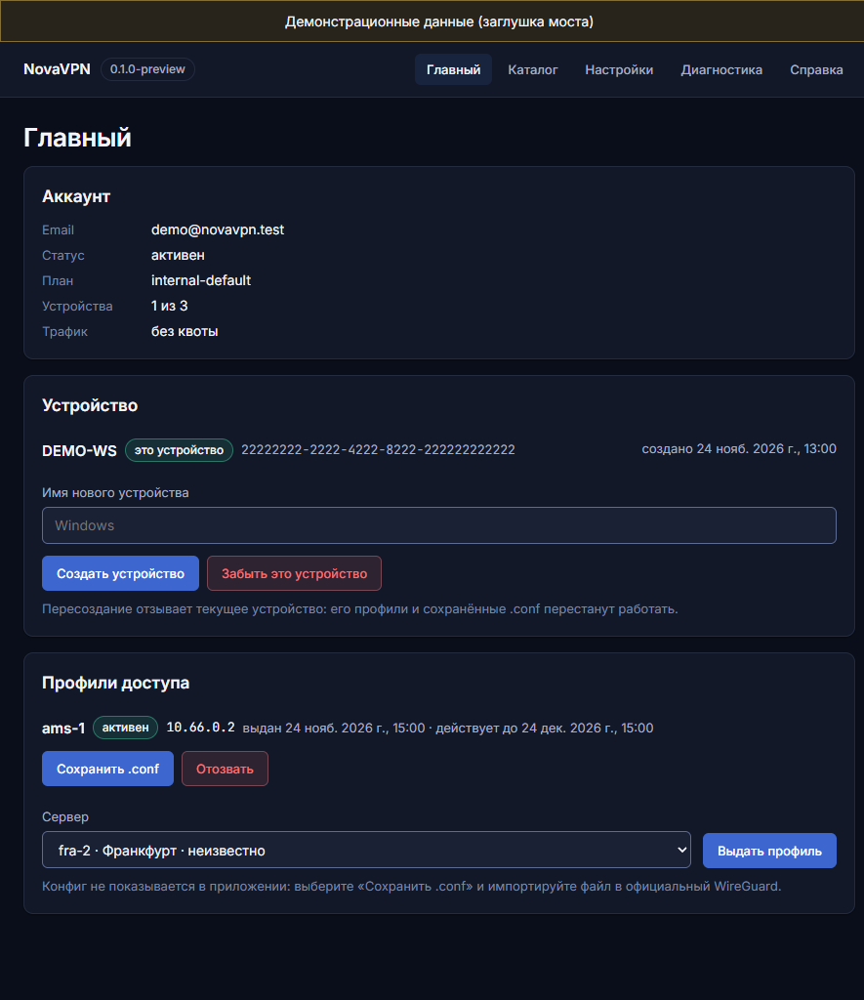
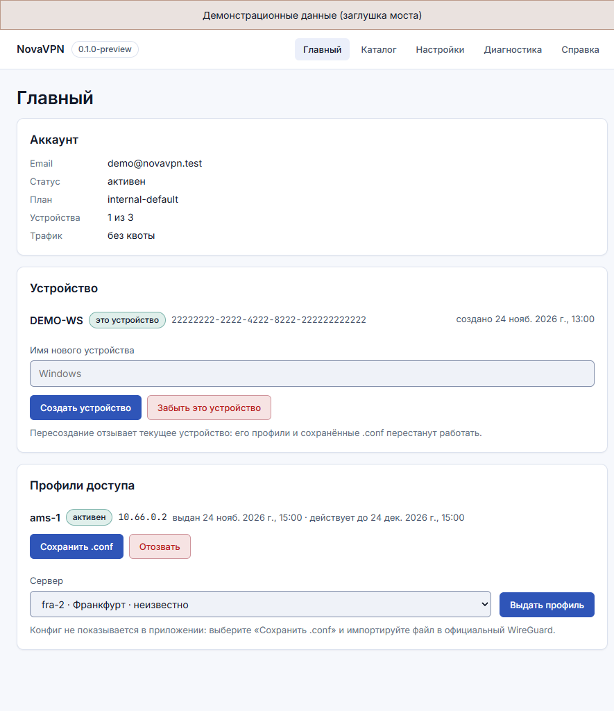
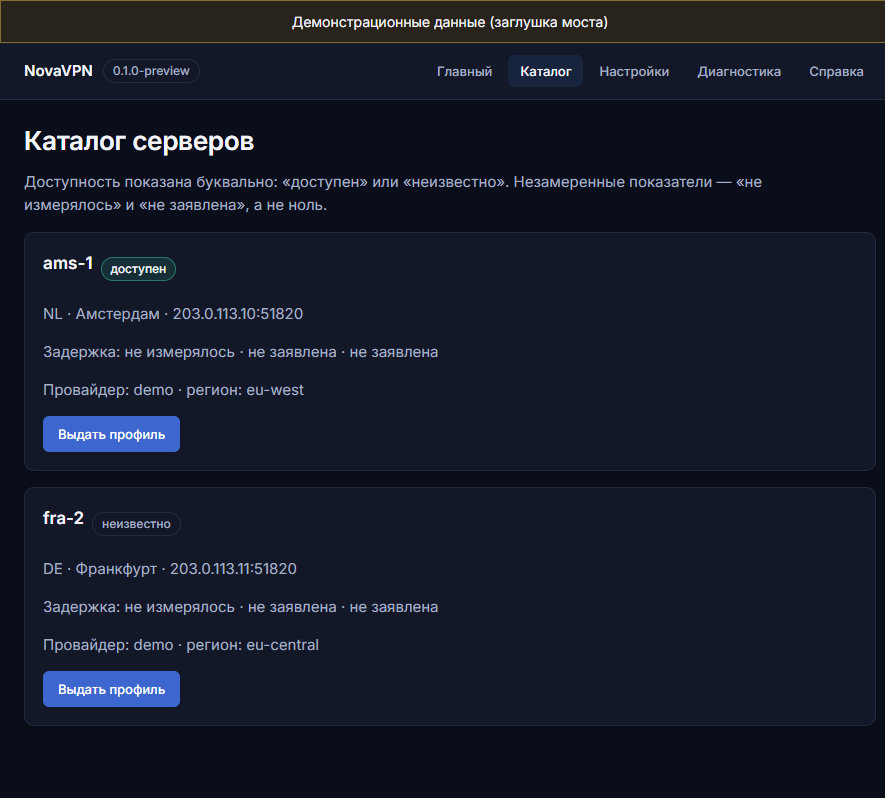
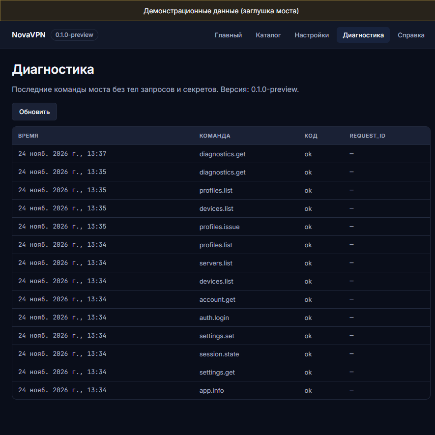

Windows-клиент 0.1.0-preview: менеджер доступа
Приложение входит в аккаунт NovaVPN, регистрирует устройство, выдаёт и отзывает профиль и сохраняет готовый .conf для официального клиента WireGuard. Собственного туннеля в нём нет, и состояний «подключено» или «защищено» он не показывает.
Страница отвечает на три вопроса: что клиент делает, как собрать и запустить preview и где проходит граница честности. Кадры сняты с заглушки моста — на каждом виден баннер «Демонстрационные данные (заглушка моста)».
Что делает и чего не делает
Клиент — это пульт управления доступом. Шифрование и передачу трафика выполняет WireGuard, а не это приложение.
- Регистрация и вход; access-токен только в памяти, refresh — под DPAPI.
- Устройство с локальной парой X25519; публичный ключ уходит на сервер, приватный остаётся на машине под DPAPI.
- Каталог серверов с буквальной доступностью и «не измерялось» вместо нуля.
- Выдача и отзыв профиля; лимит устройств и окно перекрытия ключа соблюдает сервер.
- Сборка
.confс локальнымPrivateKeyи сохранение системным диалогом. - Диагностика: имена команд моста, коды и
request_id, без тел запросов и секретов.
- Не поднимает туннель и не управляет сетевыми интерфейсами.
- Не включает kill switch и раздельную маршрутизацию.
- Не устанавливается установщиком, не подписана и не обновляется сама.
- Не работает в трее и не запускается с системой.
- Не показывает конфиг на экране, в журнале или буфере обмена.
- Не открывает локальный HTTP-порт: интерфейс живёт на виртуальном origin
https://app.novavpn.local/.
Экраны
Пять экранов: подключение к API, главный, каталог, настройки, диагностика. Ниже — четыре кадра заглушки; данные в них демонстрационные.

internal-default, устройство DEMO-WS, профиль активен. Кнопка сохраняет файл, но туннель не поднимает.
prefers-color-scheme; контраст проверен по WCAG AA.

request_id.--selftest в WebView2,
живой путь до .conf — отдельный E2E на dev-стенде.
Сборка и запуск preview
Нужны Windows 10/11 x64, .NET SDK 10.0.204, WebView2 Evergreen Runtime. Для запуска опубликованной сборки — .NET Desktop Runtime 10.
-
Собрать и прогнать тесты
Версии пакетов закреплены lock-файлами; восстановление идёт в locked-режиме.
dotnet restore client/NovaVpn.Client.sln --locked-mode dotnet test client/NovaVpn.Client.sln -c Release -
Самопроверка WebView2
Режим открывает скрытое окно, загружает настоящие ассеты, сверяет CSP,
app.infoи консоль и завершает процесс.dotnet run --project client/src/NovaVpn.Client.App -c Release -- --selftestОжидаемая последняя строка —
selftest: ok, код возврата 0. В CI этот режим не запускается: там нет WebView2 и интерактивной сессии. -
Опубликовать portable-каталог
Сначала восстановить пакеты под RID
win-x64, иначе закреплённый lock-файл не содержит нужных ресурсов и публикация сRestoreLockedModeостановится.dotnet restore client/NovaVpn.Client.sln -r win-x64 --force-evaluate dotnet publish client/src/NovaVpn.Client.App -c Release -r win-x64 \ --self-contained false -p:RestoreLockedMode=true -o client/dist/win-x64Каталог
client/dist/win-x64и zipNovaVpn-Client-0.1.0-preview-win-x64.zipв репозиторий не входят. Это framework-dependent сборка: .NET Desktop Runtime 10 и WebView2 Runtime должны быть установлены. -
Запустить и подключить API
Запустите
NovaVpn.Client.App.exe, укажите адрес API и войдите. Адрес — только origin:https://с любым хостом;http://разрешён только для127.0.0.1,localhostи[::1]. Путь, query и fragment запрещены; редиректы не выполняются. -
Импортировать .conf
Приложение сохраняет файл, в котором уже стоит локальный
PrivateKey. Импортируйте его в официальный WireGuard: «Добавить туннель» → «Импорт из файла». Подключение выполняет WireGuard; этот клиент туннелем не управляет. Отзыв профиля на сервере делает сохранённый файл нерабочим, но не удаляет его с диска.
make client-e2e поднимает dev-стенд, создаёт временного
администратора, сервер и пользователя, выдаёт профиль, собирает и сохраняет .conf, проверяет отзыв
и удаляет за собой временные данные. Пароли передаются только через stdin.
Приватность и границы
Секреты остаются на машине, а страница получает только те команды, которые перечислены в мосте.
- Пароль не сохраняется и не журналируется.
- Refresh-токен — DPAPI
CurrentUser, энтропияNovaVPN/session/v1. - Приватные ключи устройств — DPAPI
CurrentUser, энтропияNovaVPN/devices/v1. - Access-токен — только в памяти процесса.
- В журнале —
account_idиз/me, не email.
- Виртуальный origin, без слушающего порта и без локального сервера.
- Только
postMessage;AddHostObjectToScriptне используется. - Белый список команд; сообщение не больше 64 КиБ, глубина JSON не больше 8.
- CSP запрещает inline-код, внешние скрипты и любые
connect-src. - Переходы за пределы origin и новые окна отменяются.
.conf собирается в ядре приложения и уходит прямо в системный диалог
сохранения. Он не показывается в интерфейсе, не пишется в журнал, не копируется в буфер обмена и не
возвращается странице по мосту.
Чего нет и что не проверено
Список не сокращён: непроверенное не выдаётся за готовое, а неизмеренное — за ноль.
- Собственный туннель в клиенте (E-2, после спайка S4)
- Системная блокировка трафика при обрыве
- Раздельная маршрутизация по приложениям
- Установщик, подпись кода и автообновление (E-3)
- Трей, автозапуск и фоновые службы
- Импорт сохранённого
.confв официальный WireGuard на этой машине - Windows 10 и второй пользователь Windows для DPAPI
- Клиент против публичного HTTPS API с настоящим сертификатом
--selftestи Windows-джоба CI на GitHub-раннере- Пиксельная отрисовка окна WebView2 без человека
not-run —
docs/testing-status.md; решение об оболочке —
ADR-0010; исходники и тесты —
client/. Приватный ключ на сервер не уходит: это одна из причин,
по которой .conf собирается локально.